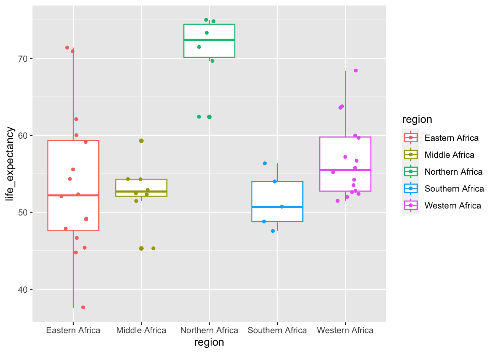

install.packages(“dslabs”) ###load packages library(“dslabs”) library(“dplyr”) library(“ggplot2”) ###look at help file for gapminder data help(gapminder) ###get an overview of data structure str(gapminder) ###get a summary of data summary(gapminder) #determine the type of object gapminder is class(gapminder)
Let’s view the curent data
View(gapminder)
###Creating a dataset for only African countries africadata <- gapminder %>% filter(continent == “Africa”)
View the africadata created
View(africadata)
###Get an overview of data strucure str(africadata)
###Get a summary of data summary(africadata)
Create a new object from africa data with only infant_mortality and life_expectancy
africadata_v1 <- africadata[,3:4]
###Get an overview of data structure str(africadata_v1)
Get summary of data
summary(africadata_v1)
Create another object from africadata with only population and life expectancy
africadata_v2 <- africadata[,c(6,4)]
Get an overview of data structure
str(africadata_v2)
Summary of data
summary(africadata_v2)
Plot infant mortality and life expectancy
ggplot(africadata_v1, aes(x=life_expectancy, y = infant_mortality)) + geom_point()
Plot infant mortality and Population size
ggplot(africadata_v2, aes(x=life_expectancy, y = population)) + geom_point()
Ploting life expectancy and infant mortality for the year 2000
ggplot(africadata_2000, aes(x=life_expectancy, y = infant_mortality)) + geom_point()
Ploting life expectancy and population size for the year 2000
ggplot(africadata_2000, aes(x=life_expectancy, y = population)) + geom_point()
Fitting a linear regression: using infant mortality as a predictor
fit1 <- lm(life_expectancy ~ infant_mortality, data = africadata_2000) ### Print result summary(fit1)
Using population size as a predictor
fit2 <- lm(life_expectancy ~ population, data = africadata_2000) ### Print result summary(fit2)
Kelly Hatfield’s Contributions
This section is added by Kelly Hatfield.
Assessing the Impact of region in the relationship between life expectancy and mortality in year 2000
First, we will recreate the visualization of the Africa data in 2000 but adding in color to differentiate the differences in region.
#load packageslibrary(dslabs) library("dplyr")
Attaching package: 'dplyr'
The following objects are masked from 'package:stats':
filter, lag
The following objects are masked from 'package:base':
intersect, setdiff, setequal, union
library("ggplot2") africadata <- gapminder %>%filter(continent =="Africa")#reset africa dataset for year 2000 onlyafricadata_2000 =subset(africadata, year==2000)#More Plotting #Infant Mortality and Life Expectancy in 2000;ggplot(africadata_2000, aes(x=infant_mortality, y=life_expectancy, color=region)) +geom_point()
Next we will run a simple linear regression model to assess the mean life expectancy in each of the regions
#Box Plots of Life Expectancy by Region for the years 2000;box=ggplot(africadata_2000, aes(x=region, y=life_expectancy, color=region)) +geom_boxplot()box +geom_jitter(shape=16, position=position_jitter(0.2))

#Simple linear regression model for year 2000; fit3 =lm (life_expectancy~factor(region), data=africadata_2000)summary(fit3)
Call:
lm(formula = life_expectancy ~ factor(region), data = africadata_2000)
Residuals:
Min 1Q Median 3Q Max
-16.056 -4.138 -0.500 3.013 17.744
Coefficients:
Estimate Std. Error t value Pr(>|t|)
(Intercept) 53.6563 1.6203 33.115 < 2e-16 ***
factor(region)Middle Africa -0.8562 2.8065 -0.305 0.762
factor(region)Northern Africa 17.4604 3.1026 5.628 1.04e-06 ***
factor(region)Southern Africa -2.1563 3.3206 -0.649 0.519
factor(region)Western Africa 3.1812 2.2915 1.388 0.172
---
Signif. codes: 0 '***' 0.001 '**' 0.01 '*' 0.05 '.' 0.1 ' ' 1
Residual standard error: 6.481 on 46 degrees of freedom
Multiple R-squared: 0.4601, Adjusted R-squared: 0.4131
F-statistic: 9.8 on 4 and 46 DF, p-value: 8.074e-06
This shows us that there are significant variability in the mean life expectancy by region in the year 2000.
Next, we will assess region and infant mortality in the same model.
Call:
lm(formula = life_expectancy ~ infant_mortality + factor(region),
data = africadata_2000)
Residuals:
Min 1Q Median 3Q Max
-19.1675 -2.4682 0.6053 2.2362 7.8495
Coefficients:
Estimate Std. Error t value Pr(>|t|)
(Intercept) 66.95785 2.36426 28.321 < 2e-16 ***
infant_mortality -0.17479 0.02694 -6.488 5.87e-08 ***
factor(region)Middle Africa 2.96949 2.12310 1.399 0.16877
factor(region)Northern Africa 10.89992 2.47117 4.411 6.35e-05 ***
factor(region)Southern Africa -4.13489 2.43244 -1.700 0.09605 .
factor(region)Western Africa 5.92329 1.71809 3.448 0.00124 **
---
Signif. codes: 0 '***' 0.001 '**' 0.01 '*' 0.05 '.' 0.1 ' ' 1
Residual standard error: 4.71 on 45 degrees of freedom
Multiple R-squared: 0.721, Adjusted R-squared: 0.6901
F-statistic: 23.26 on 5 and 45 DF, p-value: 1.828e-11
From this model we can interpret that when adjusting for region in Africa, infant mortality is still linearly associated with life expectancy (p<0.001). The parameter estimate tells us that for each one-unit increase in infant mortality life expectancy declines by 0.18 years.